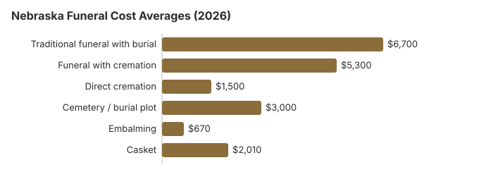

Funeral Costs in Nebraska: What Families Pay in 2026
Nebraska Funeral Costs by Item
Our Nebraska estimates, item by item. The state licenses funeral homes through DHHS but does not set their prices.
| Item | Nebraska estimate | From - to |
|---|---|---|
| Traditional funeral with burial | $6,700 | $5,025 – $8,710 |
| Funeral with cremation | $5,300 | $4,240 – $6,890 |
| Direct cremation | $1,500 | $1,050 – $2,100 |
| Cemetery / burial plot | $3,000 | $1,500 – $6,000 |
| Embalming | $670 | $500 – $1,500 |
| Casket | $2,010 | $670 – $5,360 |
Reading the Nebraska numbers: they are statewide estimates from our own model, not prices collected from Nebraska funeral homes, so read them as a guide rather than a quote or professional advice. See the estimate method and our disclaimer.
State sources: Nebraska Board of Funeral Directing and Embalming; Neb. Rev. Stat. §§ 68-131, 68-133, 68-146.

Nebraska Add-Ons to Question
Nebraska price surprises tend to come from the same add-ons:
- Embalming presented as required; Nebraska rarely requires it.
Nebraska Cremation Versus Burial
Cremation
- Direct cremation, about $1,500
- With a service, about $5,300
- No cemetery purchase
- Service can be held anywhere
- Half of Nebraska deaths (50%)
Traditional Burial
- Traditional funeral, about $6,700
- Nebraska plot, about $3,000
- Expect a vault or liner requirement
- A family grave site
- Metal casket, national median about $2,500 (NFDA 2023 General Price List Study); Nebraska prices differ by seller
Nebraska Price Drivers
A Nebraska funeral usually costs less than the US median of $8,300, and quotes in the larger cities can be 10-30% higher than small-town ones. Families sometimes lose time arguing over who signs. Nebraska settles it: an adult can direct their own arrangements through a will, a pre-need contract, or an affidavit sworn before a notary that names a person to control the remains, and otherwise the right goes to the surviving spouse and then to the children, a majority of them deciding (Neb. Rev. Stat. § 30-2223).
At 50%, Nebraska's cremation rate is 13.4 points below the 63.4% national rate that NFDA projected for 2025.
Nebraska Funeral Buyers' Rights
Report a Funeral Rule violation to the FTC at ftc.gov; the Funeral Consumers Alliance can advise Nebraska families, and state complaints go to the board at 402-471-2117.
Nebraska's Lowest-Cost Choices
| Choice | Nebraska cost | Covers |
|---|---|---|
| Direct cremation | $1,500 | Cremation with no viewing or service; Nebraska needs a permit but sets no fixed wait (Neb. Rev. Stat. 71-605). |
| Direct burial | $3,350 | Burial with no viewing or ceremony, the plainest way to bury in Nebraska. |
| Green burial | $3,685 | No embalming and no vault, where a Nebraska cemetery agrees. |
| Cremation + memorial | $5,300 | Cremation with a memorial afterward |
| Traditional funeral | $6,700 | Full funeral: viewing, ceremony, burial |
Paying for a Nebraska Funeral
- In Nebraska the county of legal settlement is responsible for burial help, and every county has to include burial expenses in its general assistance standards (Neb. Rev. Stat. §§ 68-131, 68-133).
- The $255 Social Security death payment is claimed by a qualifying Nebraska spouse or child at 1-800-772-1213, no later than two years after the death.
- If a Nebraska veteran's death on or after October 1, 2026 was not service-connected, whoever paid the funeral can ask VA on Form 21P-530EZ for up to $1,032 for burial and $1,032 for a plot; our veteran burial benefits guide has the details.
Educational Resources
- Funeral Consumers AllianceIndependent nonprofit consumer advocacy for funeral rights
- FTC Funeral RuleThe federal rule protecting funeral consumers
- Funeral Insurance GuideCompare final expense and burial insurance options
- Best Burial Insurance CompaniesSide-by-side comparison of top burial insurance providers
- Payment Assistance GuideGovernment programs and financial help for funeral costs
- Insurance Plan ComparisonCompare coverage, premiums, and payout speed across providers
Compare Funeral Costs
- Average Funeral Cost in 2026National cost breakdown with real prices
- Cremation vs. Burial Cost ComparisonSide-by-side price comparison to help you decide
- Funeral Cost BreakdownEvery line item explained: know what you're paying for
- Cheapest Funeral OptionsLower-cost alternatives, with typical price ranges
- Direct Cremation: Most Affordable OptionNFDA 2023 median $2,645 with a family-supplied container (latest available)
- How to Compare Funeral PricesStep-by-step guide to getting the best price
Nebraska Cremation and Burial Pages
More on each choice in Nebraska:
Cremation Costs in Nebraska
Nebraska families now choose cremation half the time (50%). Direct cremation from about $1,500, cremation with a service from $5,300, and the rules for urns and scattering.
Burial Costs in Nebraska
A Nebraska plot from $3,000 plus casket, vault, headstone and opening fees; all in, $14,910-$19,410.
Omaha, Lincoln and Other Nebraska Cities
Omaha and Lincoln homes price differently from those in smaller Nebraska towns. By city:
Nebraska's Funeral Director Rule
The biggest difference is the funeral director rule. Because Nebraska is one of nine states that require a licensed director for filing the death certificate, moving the body, permits and any cremation, a Nebraska family cannot save money by handling those steps itself the way families can in most states. What it can control is which director it hires and which items it buys, so the General Price List comparison matters more here. The other Nebraska feature is that burial help runs through the county of legal settlement's general assistance office rather than a statewide program.
Nebraska Planning, in Order
Planning a Nebraska funeral now or soon? This order avoids the costliest mistakes:
- Cremation or burial first: cremation in Nebraska or burial in Nebraska.
- Explore payment assistance if cost is a concern: Social Security benefits, veteran benefits, Medicaid assistance, or crowdfunding; in Nebraska, also ask the county general assistance office.
Nebraska death certificates cost $16
Nebraska DHHS Vital Records charges $16 for each certified copy of a death certificate, one of the lower fees in the country (a birth certificate is $17) (Nebraska DHHS, Vital Records service options; checked October 29, 2026). State records start in 1904. Copies go only to someone with a proper purpose under 174 NAC 3, such as next of kin or the person settling the estate.
- Walk-in: 301 Centennial Mall South in Lincoln; allow at least 30 minutes.
- Mail: send the request, a copy of your photo ID, a check payable to "Vital Records" and a self-addressed stamped envelope to PO Box 95065, Lincoln, NE 68509-5065, and allow at least 15 days.
- Online: about four to six weeks, with no expedited option.
A recorded line, 402-471-2871, lists the current fees. Because the funeral director files the certificate in Nebraska, ordering the first copies through the funeral home is usually simplest.
Nebraska's board, the funeral director rule and county burial help
The Nebraska Board of Funeral Directing and Embalming (402-471-2117) licenses Nebraska funeral homes and handles complaints about prices, misleading sales and homes that withhold the price list.
Nebraska is one of the nine states that require a licensed funeral director for certain steps. A director must file the death certificate, move the body, get the permits, supervise a home burial and arrange any cremation (Neb. Rev. Stat. §§ 38-1400s, 71-605, as summarized by Funeral Consumers Alliance). Families can still do the rest, such as washing and dressing the body or holding the service at home.
Cremation in Nebraska needs a permit but has no set waiting period (Neb. Rev. Stat. 71-605).
County burial help
Each Nebraska county must cover burial expenses in its general assistance standards (Neb. Rev. Stat. § 68-133), and the county where the person had legal settlement pays (§ 68-131). If a poor person without settlement received temporary help, the county board must provide a decent burial (§ 68-146). (Source: Neb. Rev. Stat. §§ 68-131, 68-133, 68-146.) The $255 Social Security payment, limited to a qualifying spouse or child, covers little of a $6,700 Nebraska funeral.
Veterans cemeteries in Nebraska
Omaha National Cemetery (402-253-3949) and Fort McPherson National Cemetery (308-582-4433) are reserved by your funeral home with the VA's National Cemetery Scheduling Office (800-535-1117), while the state cemeteries, Nebraska Veterans Cemetery at Alliance (308-763-2958) and Nebraska Veterans Cemetery at Grand Island (308-661-1987), handle their own requests.
Nebraska steps
- Have written price lists from two or more Nebraska homes in hand before agreeing to anything.
- Ask the Nebraska home whether your plans actually call for embalming.
- Contact the general assistance office in the county of settlement about burial help before the service.
- For a veteran, weigh Omaha National Cemetery against a private Nebraska plot.
- If a home will not honor its price list, the board is at 402-471-2117.
Frequently Asked Questions
What is the typical cost of a Nebraska funeral?
Our 2026 estimate puts a traditional Nebraska funeral with burial at about $6,700, below the $8,300 national median; cremation with a service is about $5,300 and direct cremation about $1,500, with a plot near $3,000 on top for burial. Your own number comes from General Price Lists: get two or three, for example from Omaha-area homes, and compare line by line.
How much can cremation save in Nebraska?
A lot. Direct cremation starts near $1,500 in Nebraska, and a traditional funeral with burial averages $6,700 before the plot or vault, so the gap is at least $5,200, and about $8,200 with the $3,000 plot estimate.
What are Nebraska families entitled to?
Under the FTC Funeral Rule a Nebraska family is entitled to an itemized price list and phone quotes, and may buy only what it wants. State law adds one limit: a licensed funeral director must file the death certificate, move the body, obtain permits, supervise a home burial and arrange a cremation (Neb. Rev. Stat. §§ 38-1400s, 71-605, per the Funeral Consumers Alliance). The Nebraska Board of Funeral Directing and Embalming, 402-471-2117, licenses Nebraska funeral homes and takes complaints.
What are the best ways to save in Nebraska?
First collect General Price Lists from two or three homes, for instance in the Omaha area, before committing. Ask the clerk in the county of burial about township and county cemeteries: they seldom show up online and often charge about half what a private Nebraska cemetery does. Nebraska's many family-owned homes generally publish clearer prices than chains, and direct cremation, at $1,500, is the cheapest disposition anywhere in the state. Then add what you qualify for: a free grave at Omaha National Cemetery for a veteran, county general assistance, and Social Security's $255.
Is embalming required in Nebraska?
Generally no. The FTC Funeral Rule stops a Nebraska home from telling you the law requires embalming when it does not; the price list itself has to say embalming is not required except in special cases. A home that insists should cite the rule in writing.
Are Nebraska funerals below the national average?
Cheaper. The $6,700 Nebraska traditional estimate is under the NFDA's 2023 national median of $8,300 for a funeral with viewing and burial ($6,280 with cremation), though individual Nebraska homes can be well above or below it.
Which Nebraska option costs least?
Direct cremation, from about $1,500, after which the family can hold a memorial whenever it suits, at a church, park or home. Direct burial comes next at around $3,350, still without viewing, ceremony or embalming, but the $3,000 Nebraska plot estimate comes on top.
How can I find a lower-cost Nebraska funeral home?
Get General Price Lists from three Nebraska homes and compare what each charges for direct cremation and immediate burial. The FTC Funeral Rule lets you buy the casket or urn elsewhere with no added fee.